entendiendo la red
Topología, redes y Subredes
- centralizada
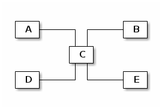
- descentralizada
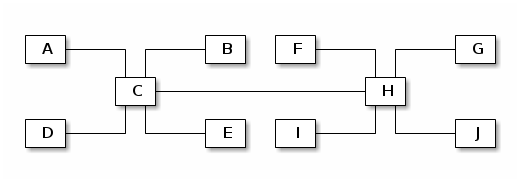
- en malla o mesh
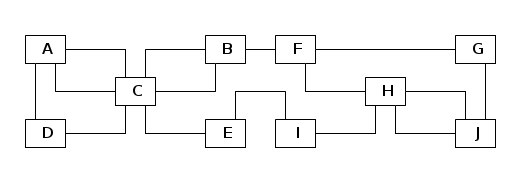
Asignación de IPs por medio de DHCP
- DHCP server
- DHCP client
Red de 4 equipos
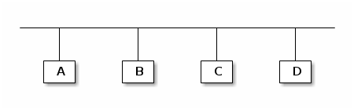
B dice, necesito una IP!
- mensaje:
DHCPDISCOVER - protocolo: UDP
- puerto destino: 67
- dirección física: 01:12:23:34:45:bb
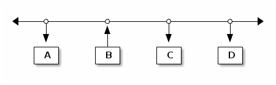
D dice, yo te puedo dar IP!
- mensaje:
DHCPOFFER - dirección física: 01:12:23:34:45:dd
- dirección IP: 192.168.10.102
- gateway: 192.168.10.1
- dns primario: 8.8.8.8
- dns secundario: 8.8.4.4
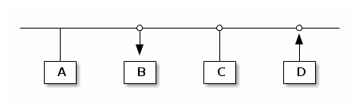
B dice, confirmo recepción!
- mensaje:
DHCPREQUEST
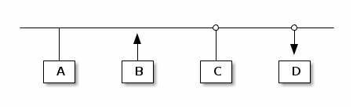
D dice, confirmo confirmación!
- mensaje:
DHCPACK
Resolución de nombres de dominios DNS
host localhost
localhost.gcoop.com.ar has address 127.0.0.1
dig osiux.com
; <<>> DiG 9.8.4-P1 <<>> osiux.com ;; global options: +cmd ;; Got answer: ;; ->>HEADER<<- opcode: QUERY, status: NOERROR, id: 43331 ;; flags: qr rd ra; QUERY: 1, ANSWER: 1, AUTHORITY: 0, ADDITIONAL: 0 ;; QUESTION SECTION: ;osiux.com. IN A ;; ANSWER SECTION: osiux.com. 300 IN A 96.8.118.129 ;; Query time: 201 msec ;; SERVER: 192.168.10.3#53(192.168.10.3) ;; WHEN: Wed Jun 5 13:26:53 2013 ;; MSG SIZE rcvd: 43
viendo un paquete de query dns
tcpdump -r dns-query.pcap -nvX
02:14:20.301428 IP (tos 0x0, ttl 64, id 27874, offset 0, flags [none], proto UDP (17), length 55)
127.0.0.1.57039 > 127.0.0.1.53: 39172+ A? osiux.com. (27)
0x0000: 4500 0037 6ce2 0000 4011 0fd2 7f00 0001 E..7l...@.......
0x0010: 7f00 0001 decf 0035 0023 fe36 9904 0100 .......5.#.6....
0x0020: 0001 0000 0000 0000 056f 7369 7578 0363 .........osiux.c
0x0030: 6f6d 0000 0100 01 om.....
analizando un paquete de query dns
tshark -r dns-query.pcap -VO dns
Frame 1: 71 bytes on wire (568 bits), 71 bytes captured (568 bits)
Linux cooked capture
Internet Protocol Version 4, Src: 127.0.0.1 (127.0.0.1), Dst: 127.0.0.1 (127.0.0.1)
User Datagram Protocol, Src Port: 57039 (57039), Dst Port: domain (53)
Domain Name System (query)
Transaction ID: 0x9904
Flags: 0x0100 Standard query
0... .... .... .... = Response: Message is a query
.000 0... .... .... = Opcode: Standard query (0)
.... ..0. .... .... = Truncated: Message is not truncated
.... ...1 .... .... = Recursion desired: Do query recursively
.... .... .0.. .... = Z: reserved (0)
.... .... ...0 .... = Non-authenticated data: Unacceptable
Questions: 1
Answer RRs: 0
Authority RRs: 0
Additional RRs: 0
Queries
osiux.com: type A, class IN
Name: osiux.com
Type: A (Host address)
Class: IN (0x0001)
capturar consultas al dns
ssh root@linksys '/usr/sbin/tcpdump -i br0 -s 0 -w - dst port 53' >linksys.pcap
ranking de dns
tcpdump -r linksys.pcap -c 2000 -nnnA dst port 53 | \
egrep -o "A+\? .*\." | sed s/".$"//g | awk '{print $2}' | \
egrep -v "(osiux|fbcdn|akamai)" | sort | uniq -c | sort -nr | head
| 47 | www.facebook.com |
| 42 | dns.msftncsi.com |
| 41 | su.ff.avast.com |
| 37 | ssl.google-analytics.com |
| 37 | ipv6.msftncsi.com |
| 32 | www.habbo.es |
| 26 | imap.googlemail.com |
| 21 | dynamic.zoneedit.com |
| 19 | www.msftncsi.com |
| 18 | kiwwwi.com.ar |
Cómo saber la IP de un equipo?
B dice, cuál es la IP de D?
- Se que D es 00:14:d1:18:4a:dd
- Yo soy B y mi mac es 00:14:d1:18:4a:bb
- Todos reciben paquete ARP por difusión
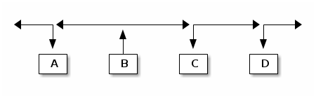
D contesta, mi IP es 10.4.14.225
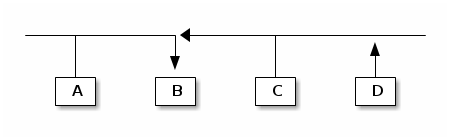
Quénes están en esta red?
sudo arp-scan --interface eth0 --localnet
0 packets received by filter, 0 packets dropped by kernel Ending arp-scan 1.8.1: 256 hosts scanned in 1.625 seconds (157.54 hosts/sec). 0 responded
pingueando
ping -c 5 127.0.0.1
PING 127.0.0.1 (127.0.0.1) 56(84) bytes of data. 64 bytes from 127.0.0.1: icmp_req=1 ttl=64 time=0.065 ms 64 bytes from 127.0.0.1: icmp_req=2 ttl=64 time=0.052 ms 64 bytes from 127.0.0.1: icmp_req=3 ttl=64 time=0.052 ms 64 bytes from 127.0.0.1: icmp_req=4 ttl=64 time=0.051 ms 64 bytes from 127.0.0.1: icmp_req=5 ttl=64 time=0.051 ms --- 127.0.0.1 ping statistics --- 5 packets transmitted, 5 received, 0% packet loss, time 3999ms rtt min/avg/max/mdev = 0.051/0.054/0.065/0.007 ms
capturando pings
sudo tcpdump -i lo -nnnt -c 5 icmp
viendo un ping
sudo tcpdump -i lo -nnntvvX -c 1 -e icmp
00:00:00:00:00:00 > 00:00:00:00:00:00, ethertype IPv4 (0x0800), length 98: (tos 0x0, ttl 64, id 0, offset 0, flags [DF], proto ICMP (1), length 84)
127.0.0.1 > 127.0.0.1: ICMP echo request, id 4177, seq 329, length 64
0x0000: 4500 0054 0000 4000 4001 3ca7 7f00 0001 E..T..@.@.<.....
0x0010: 7f00 0001 0800 a68d 1051 0149 e754 5e51 .........Q.I.T^Q
0x0020: 022f 0d00 0809 0a0b 0c0d 0e0f 1011 1213 ./..............
0x0030: 1415 1617 1819 1a1b 1c1d 1e1f 2021 2223 .............!"#
0x0040: 2425 2627 2829 2a2b 2c2d 2e2f 3031 3233 $%&'()*+,-./0123
0x0050: 3435 3637 4567
protocolos
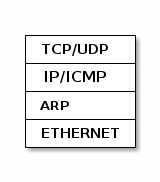
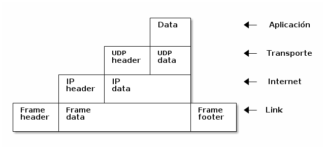
Qué tiene un paquete TCP/IP?
+------------------------+--------------------------+ | MAC origen fe:ca:fe:ca | MAC destino ca:fe:ca:fe | +------------------------+--------------------------+ | IP origen 192.168.1.22 | IP destino 96.8.118.129 | +---------------------------------------------------+ | Puerto origen 45678 | Puerto destino: 80 | +------------------------+--------------------------+ | Nro Secuencia 12345 | Nro ACK | +---+---+---+---+---+----+--------------------------+ | U | A | P | R | S | F | GET / HTTP/1.0 | | R | C | S | S | Y | I | | | G | K | H | T | N | N | | +---+---+---+---+---+---+---------------------------+
Ethernet header
| |1 |2 |3 | |0|1|2|3|4|5|6|7|8|9|0|1|2|3|4|5|6|7|8|9|0|1|2|3|4|5|6|7|8|9|0|1| +-+-+-+-+-+-+-+-+-+-+-+-+-+-+-+-+-+-+-+-+-+-+-+-+-+-+-+-+-+-+-+-+ | Hardware type | Protocol type | +---------------+---------------+-------------------------------+ |Hw address len.|Pr address len.| Opcode | +---------------+---------------+-------------------------------+ | Source hardware address | +---------------------------------------------------------------+ | Source protocol address | +---------------------------------------------------------------+ | Destination hardware address | +---------------------------------------------------------------+ | Destination protocol address | +---------------------------------------------------------------+ | Data | +---------------------------------------------------------------+
IP header
| |1 |2 |3 | |0|1|2|3|4|5|6|7|8|9|0|1|2|3|4|5|6|7|8|9|0|1|2|3|4|5|6|7|8|9|0|1| +-+-+-+-+-+-+-+-+-+-+-+-+-+-+-+-+-+-+-+-+-+-+-+-+-+-+-+-+-+-+-+-+ |Version| IHL | Diff.Services | Total length | +-------+-------+---------------+-----+-------------------------+ | Identification |Flags| Fragment offset | +---------------+---------------+-----+-------------------------+ | TTL | Protocol | Header checksum | +---------------+---------------+-------------------------------+ | Source IP address | +---------------------------------------------------------------+ | Destination IP address | +---------------------------------------------------------------+ | Options and padding | +---------------------------------------------------------------+
UPD header
| |1 |2 |3 | |0|1|2|3|4|5|6|7|8|9|0|1|2|3|4|5|6|7|8|9|0|1|2|3|4|5|6|7|8|9|0|1| +-+-+-+-+-+-+-+-+-+-+-+-+-+-+-+-+-+-+-+-+-+-+-+-+-+-+-+-+-+-+-+-+ | Source Port | Destination Port | +-------------------------------+-------------------------------+ | Length | Checksum | +-------------------------------+-------------------------------+ | Data | +---------------------------------------------------------------+
TCP header
| |1 |2 |3 | |0|1|2|3|4|5|6|7|8|9|0|1|2|3|4|5|6|7|8|9|0|1|2|3|4|5|6|7|8|9|0|1| +-+-+-+-+-+-+-+-+-+-+-+-+-+-+-+-+-+-+-+-+-+-+-+-+-+-+-+-+-+-+-+-+ | Source Port | Destination Port | +-------------------------------+-------------------------------+ | Sequence Number | +-------------------------------+-------------------------------+ | Acknowledgment Number | +-------+-----+-----+-+-+-+-+-+-+-------------------------------+ |dOffset|rsrvd| ECN |U|A|P|R|S|F| Window | | | | |R|C|S|S|Y|I| | | | | |G|K|H|T|N|N| | +-------+-----+-----+-+-+-+-+-+-+-------------------------------+ | Checksum | Urgent Pointer | +-------------------------------+-------------------------------+ | Options and padding | +---------------------------------------------------------------+ | Data | +---------------------------------------------------------------+